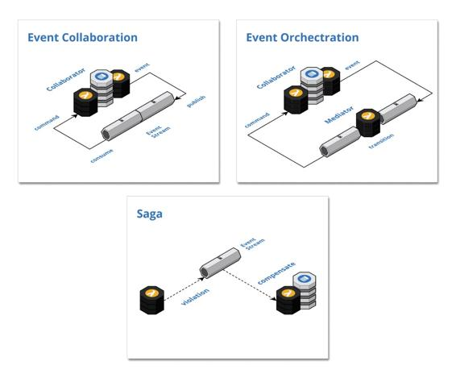

Control patterns
These patterns provide the control flow for inter-component collaboration between the boundary components of cloud-native systems.

Event Collaboration: Publish domain events to trigger downstream commands and create a reactive chain of collaboration across multiple components
Event Orchestration: Leverage a mediator component to orchestrate collaboration between components without event type coupling
Saga: Trigger compensating transactions to undo changes in a multi-step flow when business rules are violated downstream